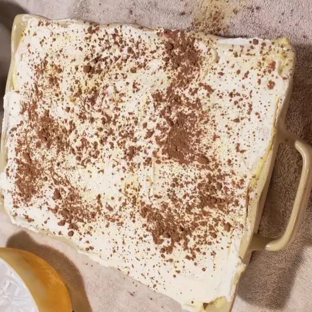

Tiramisu

Description
This tiramisu recipe shows you how to make the classic Italian layered dessert at home with rum-flavored
, coffee-soaked ladyfingers, a creamy mascarpone custard, and whipped cream. The top of this tiramisu is dusted
with cocoa powder for an impressive no-bake dessert.
Classic tiramisu, with its irresistible coffee flavor and lightly sweetened mascarpone, will never go out of style.
This tiramisu recipe is a no-bake dessert that's sure to impress even the pickiest of eaters.
Ingredients
- 6 large egg yolks
- 3/4 cup white sugar
- 2/3 cup milk
- 1 1/4 cups heavy cream
- 1/2 teaspoon vanilla extract
- 1 pound mascarpone cheese, at room temperature
- 1/4cup strong brewed coffee, at room temperature
- 2 tablespoons rum
- 2(3 ounce) packages ladyfinger cookies
- 1 tablespoon unsweetened cocoa powder
Steps
- Whisk together egg yolks and sugar in a medium saucepan until well blended.
- Whisk in milk and cook over medium heat, stirring constantly, until mixture comes to a boil
- Boil gently for 1 minute, then remove from the het and allow to cool slightly
- Cover tightly and chill in the refrigerator for 1 hour
- Beat cream and vanilla in a medium bowl with an electric mixer until stiff peaks form
- Remove egg yolk mixture from the refrigerator; add mascarpone cheese and whisk until smooth
- Combine coffee and rum in a small bowl. Split ladyfingers in half lengthwise and drizzle with the coffee mixture
- Arrange 1/2 of the soaked ladyfingers in the bottom of a 7x11-inch dish. Spread 1/2 of the mascarpone mixture over the ladyfingers, then
spread 1/2of the whipped cream over top. Repeat layers once more. Sprinkle cocoa powder over top
- Cover and refrigerate until set, 4 to 6 hours
The Menu